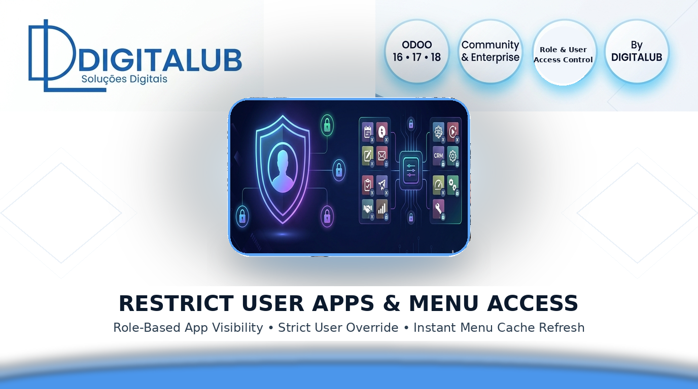
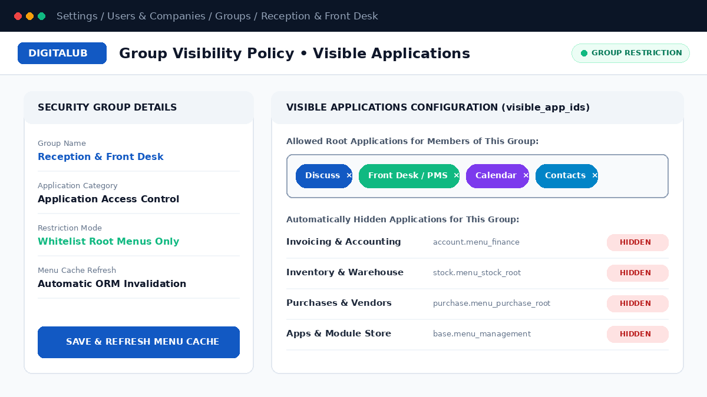
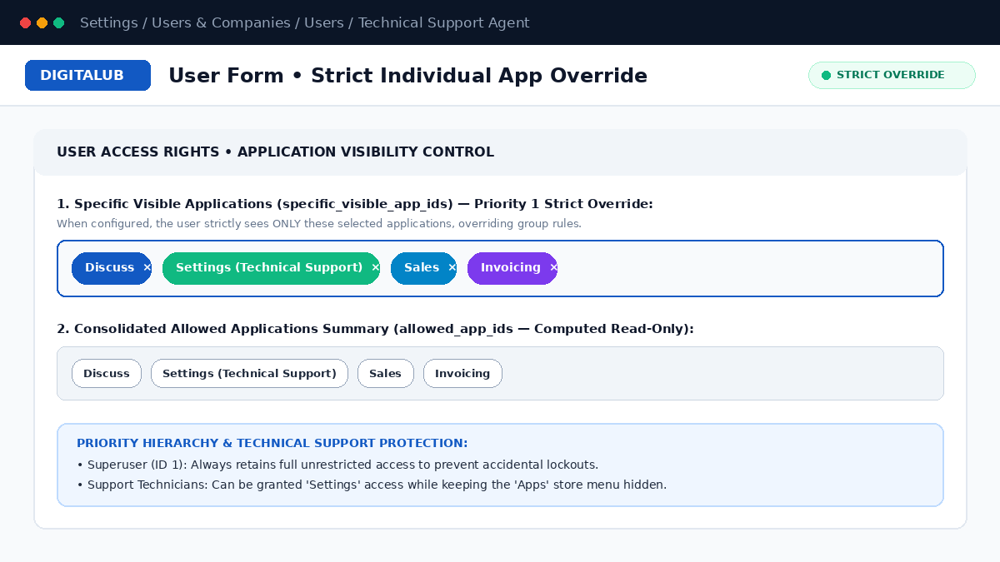
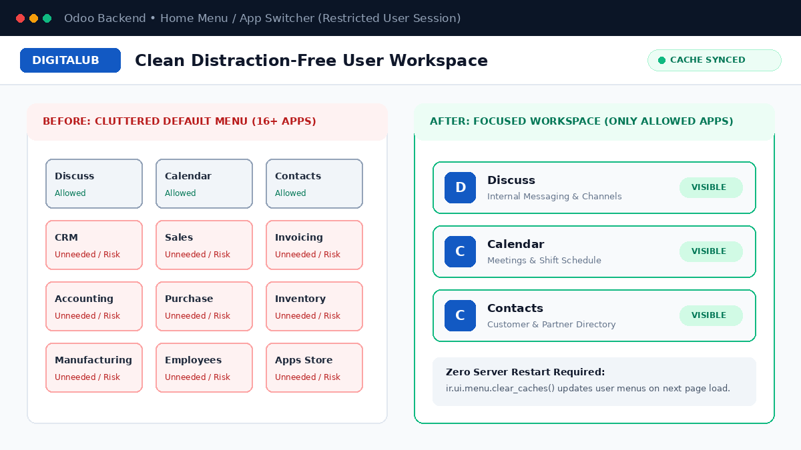

Eliminate menu clutter and enforce strict workspace boundaries. Control exactly which root applications each security group or individual user can see, with instant ORM menu cache refresh and zero server restarts.
3-Tier Priority Hierarchy
Superuser lock-out protection, Individual Strict Override, and Group-level App Whitelisting.
Assign allowed root applications directly inside any Odoo Security Group. Users belonging to multiple restricted groups automatically receive the combined union of allowed applications.
Override group rules on any specific user profile with a single click, or empower Technical Support staff with access to Settings while keeping the Apps Store menu hidden.
Every change to user or group visibility automatically triggers ir.ui.menu.clear_caches(), applying menu changes immediately on the user's next page refresh.
Deploy role-based or individual application restrictions in 3 simple steps.
Open any Security Group under Settings → Users & Companies → Groups and select the root menus allowed in the Visible Applications tab. All non-selected root menus are automatically hidden for members of that group.

Need an exception for a specific user or support technician? Configure Specific Visible Applications directly on the User Form to strictly override group rules while reviewing the computed summary of allowed apps in real time.

Restricted users see only the applications relevant to their daily work (such as Discuss, Calendar, or Front Desk), eliminating accidental navigation into sensitive modules without restarting the Odoo server.

Native ORM architecture with zero external Python dependencies
| Supported Versions | Odoo 16.0, 17.0, 18.0 (Community & Enterprise) |
| Required Core Modules | base, mail |
| Priority Resolution Engine | 1. Superuser Bypass (ID 1) • 2. User Strict Override (specific_visible_app_ids) • 3. Security Group Union (visible_app_ids) |
| Multi-Language Support | English (en_US) & Portuguese (pt_PT / pt_AO) included |
| Installation Type | Standard Odoo Addon • Automatic Post-Init Hook • Odoo.sh & On-Premise Ready |
Premier specialists in Odoo ERP architecture, high-performance business applications, and enterprise access governance. Our modules are built following strict clean-code standards, automated cache synchronization, and production stability.